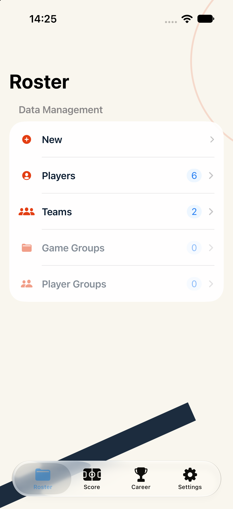
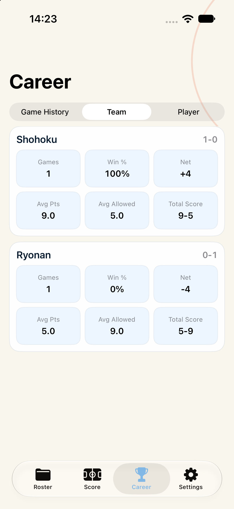
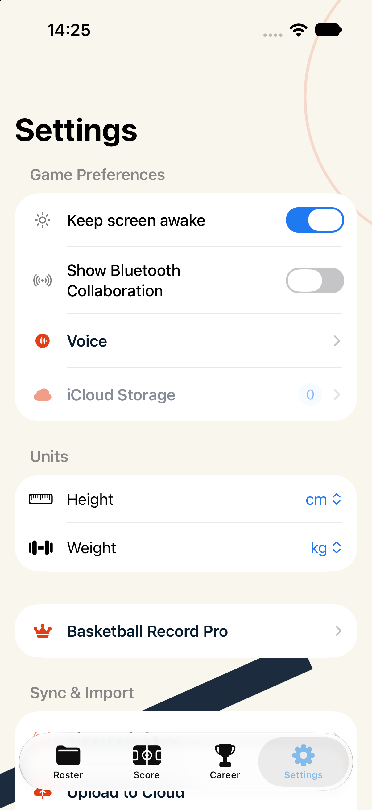
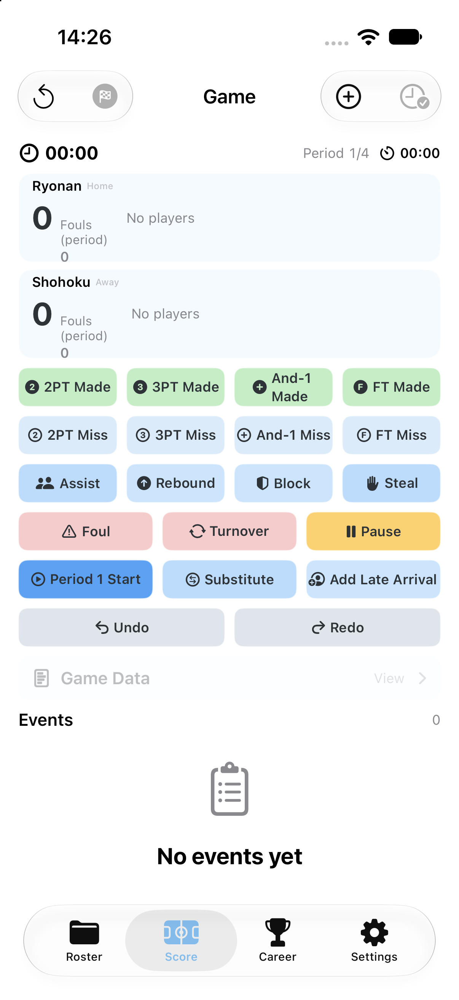

Simulator 测试 Agent
设备：iPhone 17 · iOS 27.0 · 1206×2622 · UDID F7F6F3E8-AA77-4FC4-A65B-8BDA2CA78E92
结果：通过。每页启动后等待 5 秒再采集，避免把启动过渡帧当成证据。
模拟器构建使用 Debug 包；CloudKit 在模拟器目标下安全跳过容器初始化，因此不再因缺少 entitlement 黑屏或退出。记分页也成功采集，证明原有记分操作仍可启动。



